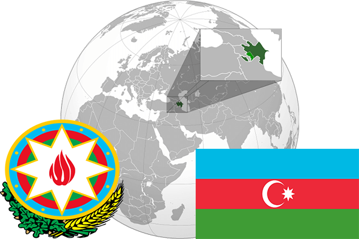

To`liq nomi: Ozarbayjon Respublikasi
Region: G`arbiy Osiyo
Qonunchilik shakli: Respublika
Mustaqillik kuni: 28 may 1918 yil Rossiyadan, 30 avgust 1991-yil Sovet Ittifoqidan
Poytaxti: Baku
Maydoni: 86 600 km² (dunyoda 113 -o`rinda )
Chegaradosh davlatlari: Rassiya, Eron, Armaniston, Gruziya, Turkiya.
Aholisi: 9,574,000 (dunyoda 92 -o`rinda ) 2015 -yil roʻyxat
Aholi zichligi: 111/km²
Aholining o`rtacha yoshi: 66,3 yil ( 70,7 ayollar, 61,9 erkaklar)
Rasmiy tili: Ozarbayjon tili
Dini: 99,2% musulmonlar
Pul birligi: Ozarbayjon manati
Telefon prefiksi: +994
Internet domen: .az
Xalqaro tashkilotlarga a`zoligi: BMT (1992 -yildan), MDH
Dengiz va okeanlarga chiqishi: Kaspiy dengizi
YIM: Butun: $ 168.4 mlrd, Jon boshiga: $ 17,500 (2015 - yil roʻyxati)
Yirik shaharlari: Baku, Sumgait, Ganja, Lenkoran